EXPLORACIÓN COMPUTACIONAL DE LITERATURA CIENTÍFICA MEDIANTE ANÁLISIS BIBLIOMÉTRICO E INTELIGENCIA ARTIFICIAL
P. Pacheco1, I. Quispe2 y L. Silva3
1 Departamento de Ingeniería Mecánica – Universidad de La Serena
Benavente 980 – La Serena – CHILE
e-mail: ppacheco@userena.cl
2 Departamento de Ingeniería en Alimentos – Universidad de La Serena
Av. Raúl Bitrán Nachary Nº 1305 – La Serena – CHILE
e-mail: iquispe@userena.cl
3Departamento de Ingeniería Mecánica – Universidad Técnica Federico Santa María
Avenida España 1680 –Valparaíso – CHILE
e-mail: luis.silval@usm.cl
XXIV Congreso Chileno de Mecánica Computacional
Contenido
Motivación
Análisis bibliométrico
- Extracción de datos y Procesamiento
- Espectroscopía de año de publicaciones
- Análisis de redes
Inteligencia Artificial
- Modelación de tópicos
- Análisis de Resultados
Conclusiones
Motivación
Crisis a nivel mundial
- Cambio climático
- Pérdida de naturaleza y biodiversidad
- Contaminación y desechos
Agenda 2030
- Objetivos de desarrollo sostenible (SDG)
- Mejorar la sostenibilidad de la cadena de frío de los alimentos
Motivación
Total de alimentos para consumo humano
- Se pierde un 14% (1)
- Se desperdicia un 17% (2)
- Costo para economía mundial: 936.000M USD/año (3)
Falta de refrigeración eficaz
- En 2017 se perdió el 12% de producción alimentaria mundial (4)
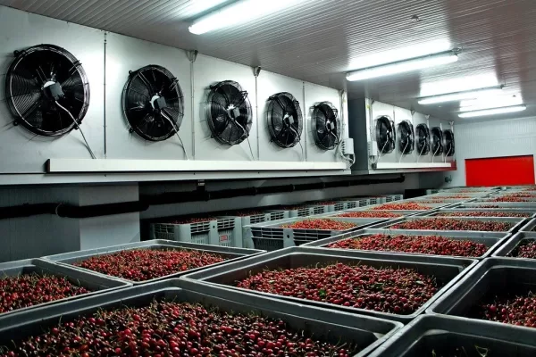
(1) Organización de las Naciones Unidas para la Alimentación y la Agricultura [FAO], 2019
(2) PNUMA, 2021
(3) FAO, 2014a
(4) Instituto Internacional de Refrigeración [IIF/IIR], 2021a
Problema: Deshielo de evaporadores
El agua contenida en el aire se condensa sobre las aletas y los tubos $\rightarrow$ formación de hielo
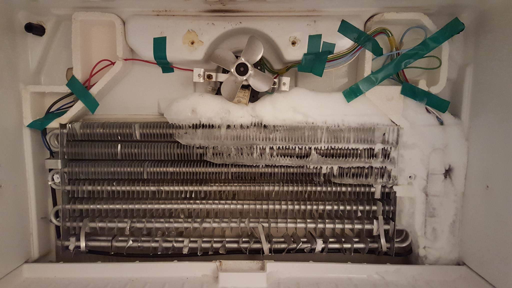
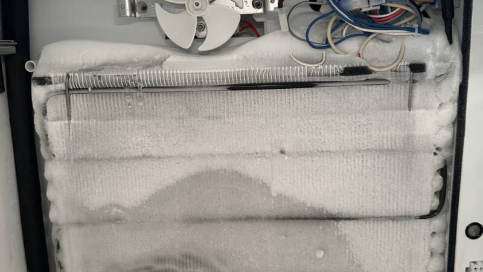
Formación de escarcha en sistemas HVAC y refrigeración
- Actúa como aislante térmico.
- Disminuye el COP del sistema y aumenta el consumo energético.
- Puede reducir hasta en un 75 % la eficiencia de transferencia de calor.
Sarmiento, A. P., de Sá Sarmiento, F. I., Shooshtari, A., and Ohadi, M. (2024). A review of recent progress in active frost prevention/control techniques in refrigeration and HVAC systems. Applied Thermal Engineering, 253, 123680.
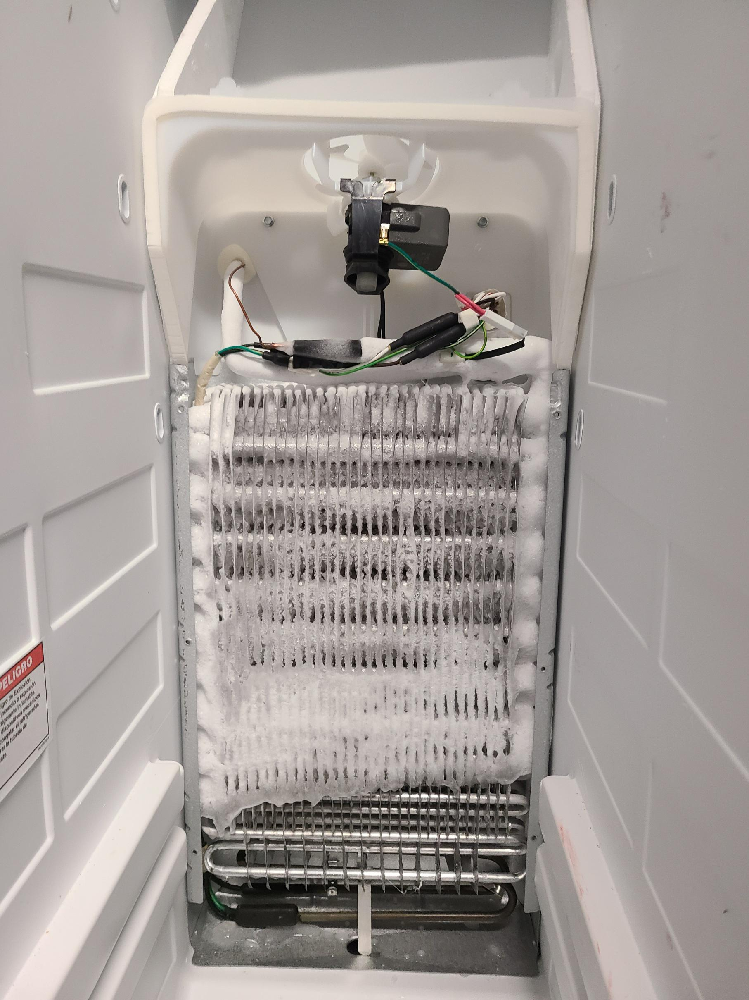
Análisis bibliométrico
Evaluar y visualizar la producción científica - estudio cuantitativo.
Seleccionar revistas o congresos con alta probabilidad de publicación.
Identificar líderes en trabajos, autores e instituciones.
Evaluar colaboraciones que generan mayor visibilidad.
Detectar temas emergentes y oportunidades de innovación.
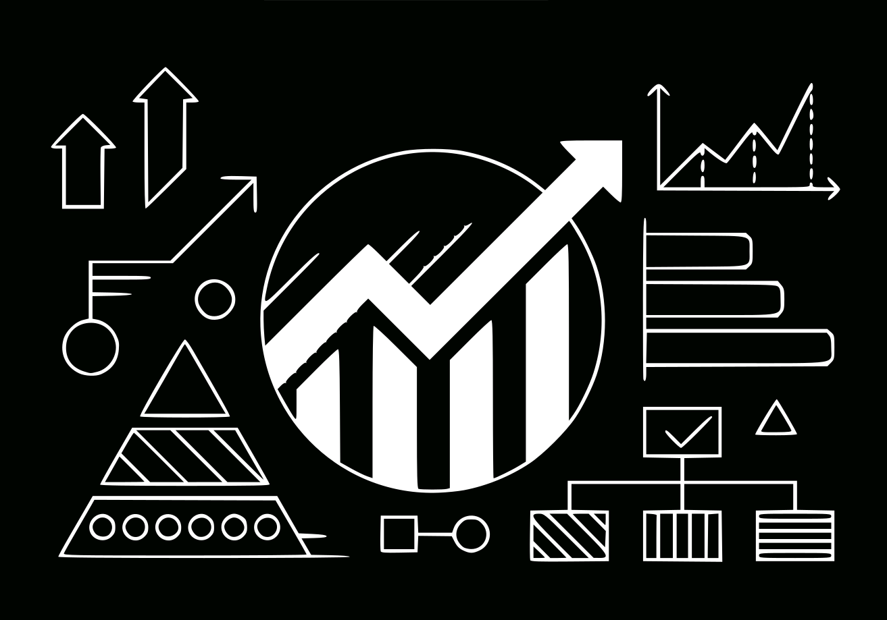
Análisis bibliométrico - Procesamiento de datos
- WOS
- Búsqueda: TS = (evaporator* AND (defrosting* OR anti-frosting* OR defrost*))
- Documentos: Papers | Review
- Intervalo de tiempo: 1978 - 2025
- N° de documentos: 314
Exported metadata (Web of Science)
✓ Title
✓ Source
✓ Conf. Info/Sponsors
✓ Times Cited Count
✓ Accession Number
✓ Authors Identifiers
✓ ISSN
✓ PubMed ID
✓ Abstract
✓ Addresses
✓ Affiliations
✓ Document Type
✓ Keywords
✓ WoS Categories
✓ Research Areas
✓ WoS Editions
✓ Cited References
✓ Cited Reference Count
✓ Usage Count
✓ Hot Paper
✓ Highly Cited
✓ Funding Information
✓ Publisher Information
✓ Open Access
✓ Page Count
✓ Source Abbrev.
✓ IDS Number
✓ Language
Análisis Bibliométrico - Herramientas
-
litstudy
Heldens, S. et al. (2022). litstudy: A Python package for literature reviews. SoftwareX, 20, 101207.
Amsterdam Science Park. -
pybibx
Pereira, V., Basilio, M. P., and Santos, C. H. T. (2025). PyBibX – a Python library for bibliometric and scientometric analysis powered with artificial intelligence tools. Data Technologies and Applications.
Universidade Federal Fluminense. -
metaknowledge
McLevey, J., and McIlroy-Young, R. (2017). Introducing metaknowledge: Software for computational research in information science, network analysis, and science of science. Journal of Informetrics, 11(1), 176–197.
University of Waterloo - University of Chicago.
Análisis bibliométrico - Reporte general
Generado con PyBibX
| Timespan | 1978–2025 |
| Countries | 34 |
| Institutions | 268 |
| Sources | 68 |
| References | 4660 |
| Languages | 3 |
| Documents | 300 |
| Article | 230 |
| Retracted Publication | 1 |
| Proceedings Paper | 55 |
| Review | 12 |
| Avg Docs/Author | 1.32 |
| Avg Docs/Institution | 8.71 |
| Avg Docs/Source | 3.66 |
| Avg Docs/Year | 8.11 |
| Authors | 919 |
| Keywords | 699 |
| Keywords Plus | 359 |
| Single-Authored | 11 |
| Multi-Authored | 289 |
Análisis bibliométrico - Reporte general
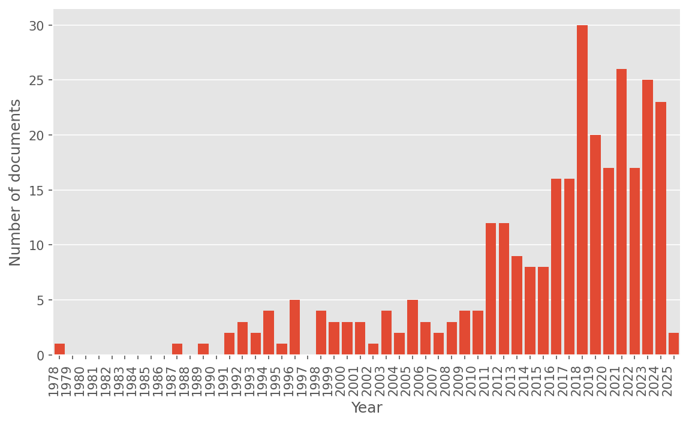
TS = (evaporator* AND (defrosting* OR anti-frosting* OR defrost*))
Análisis bibliométrico - Reporte general
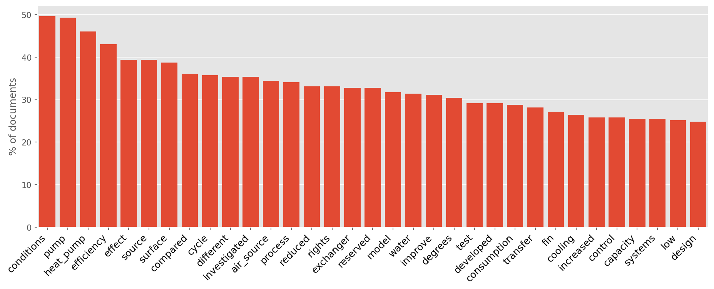
TS = (evaporator* AND (defrosting* OR anti-frosting* OR defrost*))
Evolución de Palabras por Año
Diagrama de Sankey
Productividad por Universidades
Productividad por Revistas
Palabras por Países - Mapa de Calor
Palabras por Revistas - Mapa de Calor
Mapa de Colaboración entre Países
Espectroscopía del Año de Publicación de Referencia (RPYS)
Analiza el impacto histórico de publicaciones científicas.
Detecta años pico en citas y contribuciones clave.
Muestra la influencia acumulada a lo largo del tiempo.
Usa desviación respecto a la mediana para ajustar datos.
Comins, J. A., and Hussey, T. W. (2015). Compressing multiple scales of impact detection by Reference Publication Year Spectroscopy. Journal of Informetrics, 9(3), 449–454.
Wray, K. B., and Bornmann, L. (2015). Philosophy of science viewed through the lens of “Referenced Publication Years Spectroscopy” (RPYS). Scientometrics, 102, 1987–1996.
Espectroscopía del Año de Publicación de Referencia
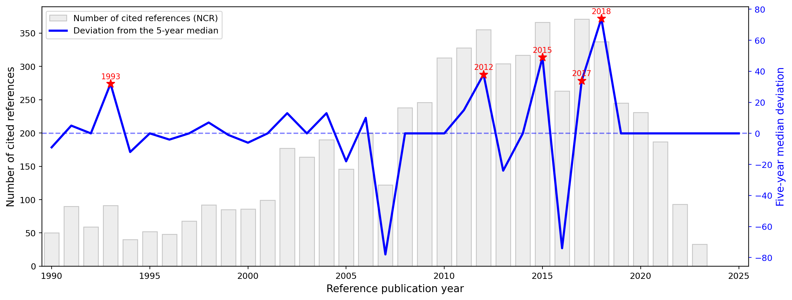
Espectroscopía
| Cita | Nº de citas |
|---|---|
| Song et al. (2018). Review on improvement for air source heat pump units during frosting and defrosting. Applied Energy, 211, 1150–1170. | 39 |
| Song et al. (2018). Experimental study on time-based start defrosting control strategy optimization for air source heat pumps. Energy and Buildings, 178, 26–37. | 22 |
| Amer and Wang (2017). Review of passive defrosting surface methods in refrigeration systems. | 34 |
| Li et al. (2017). Improving defrosting performance by controlling frost distribution in household refrigerators. International Journal of Refrigeration, 77, 136–148. | 15 |
| Wang et al. (2015). Effects of surface characteristic on frosting and defrosting in fin-tube heat exchangers. Applied Thermal Engineering, 75, 1126–1132. | 24 |
| Zhu et al. (2015). Temperature–Humidity–Time defrosting control method for air-source heat pumps. International Journal of Refrigeration, 54, 45–54. | 23 |
Espectroscopía
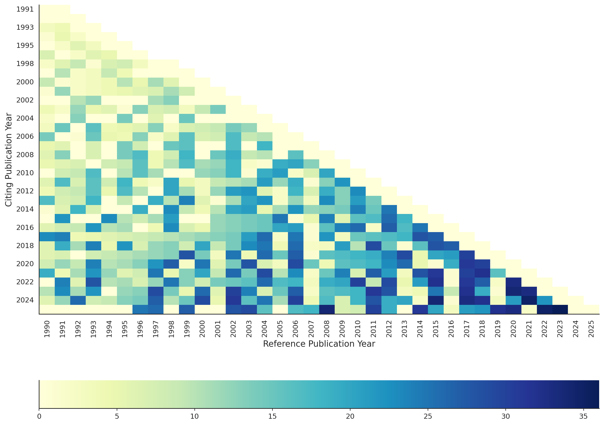
Análisis de Redes
Permite estudiar la colaboración entre investigadores y las corrientes intelectuales de un campo.
Se analizan redes de: coautoría, citación directa, acoplamiento bibliográfico y co-citación.
Un grafo se define como una estructura matemática que modela las relaciones entre entidades académicas:
$$ G(V, E) $$
Donde:
Nodos (V): representan unidades discretas como autores, artículos o palabras clave.
Aristas (E): representan relaciones entre nodos, como colaboraciones o citaciones.
Los conjuntos se definen como:
$$ V = \{v_1, v_2, ..., v_N\} \quad \text{y} \quad E = \{e_1, e_2, ..., e_M\} $$
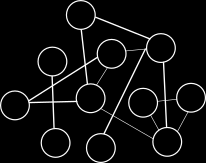
Red de Coautoría
Se define un grafo no dirigido $\mathcal{G}_C = (V, E)$ donde:
• $V = \{a_1, a_2, \dots, a_n\}$ es el conjunto de autores.
• $E = \{(a_i, a_j) \mid \exists\, p_k \text{ tal que } a_i, a_j \, \text{coautores de } p_k\}$.
Representa colaboraciones académicas y permite identificar comunidades activas o investigadores influyentes.
Red de Coautores
Red de Coautores
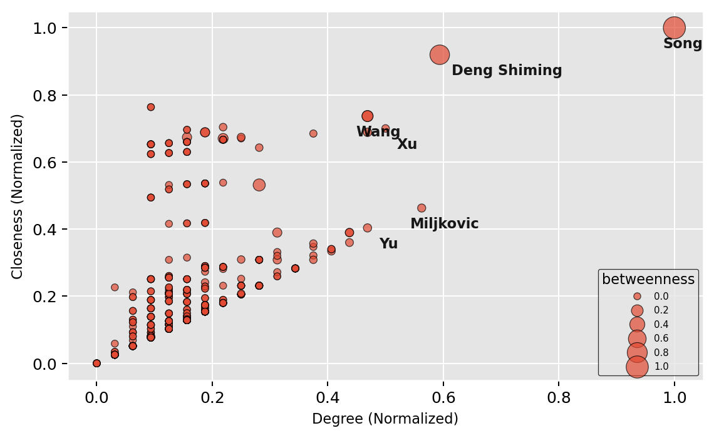
Red de Citación
Grafo dirigido $\mathcal{G}_{\text{Cit}} = (V, E)$ donde:
• $V = \{d_1, d_2, \dots, d_n\}$ es el conjunto de documentos.
• $E = \{(d_i, d_j) \mid d_i \text{ cita a } d_j\}$.
Esta red modela el flujo de conocimiento científico. Los nodos con muchas citas recibidas representan trabajos influyentes.
Small, H. (1973). Co‐citation in the scientific literature: A new measure of the relationship between two documents. Journal of the American Society for information Science, 24(4), 265-269.
Red de Citación
Red de Citación
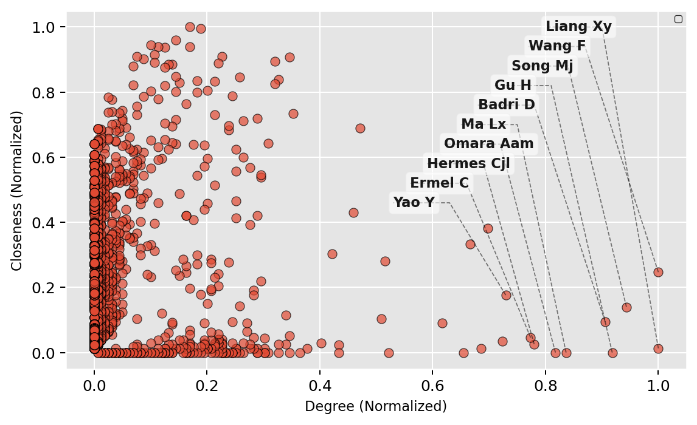
Modelación de Tópicos - NNMF
Identificar tendencias, temas emergentes y áreas consolidadas.
Segmentar el conocimiento dentro de un campo.
Word Cloud $\rightarrow$ documentos representativos $\rightarrow$ Nombre del tópico
Non-negative Matrix Factorization
Algoritmo de Agrupación $$ \mathbf{X} = \mathbf{W} \mathbf{H} $$ donde $\mathbf{X} \in \R^{p \times n}$, $\mathbf{W} \in \R^{p \times r}$ y $\mathbf{H} \in \R^{r \times n}$
Norma de Frobenius: forma de medir la aproximación numérica de $\mathbf{X} \simeq \mathbf{W} \mathbf{H}$: $$ \text{Error} = \text{min} \left| \left| \mathbf{X} - \mathbf{W} \mathbf{H} \right| \right|_F^2 = \sum_{i,j} \left(\mathbf{X} - \mathbf{W} \mathbf{H}\right)_{i,j}^2 $$
Problema de optimización: $$ \underset{\mathbf{W},\mathbf{H}}{\text{min}} \,\, \text{Error} \quad \text{sujeto a} \quad W \ge 0 \,\,\, \text{y} \,\,\, H \ge 0 $$
Shahnaz, F., Berry, M. W., Pauca, V. P., and Plemmons, R. J. (2006). Document clustering using nonnegative matrix factorization. Information Processing and Management, 42(2), 373-386.
Heldens, S., Sclocco, A., Dreuning, H., van Werkhoven, B., Hijma, P., Maassen, J., and van Nieuwpoort, R. V. (2022). litstudy: A Python package for literature reviews. SoftwareX, 20, 101207.
Modelación de Tópicos - Word Cloud
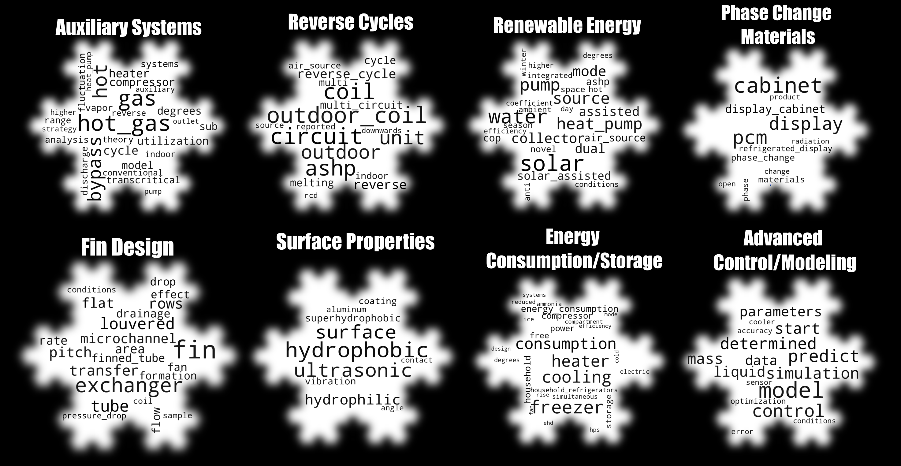
Conclusión Final
- No existe una estrategia dominante para el deshielo de evaporadores.
- Los artículos más citados son revisiones.
- Existe espacio libre para innovar y explorar enfoques híbridos.
- Se requiere mayor colaboración internacional y una integración metodológica más sólida.
EXPLORACIÓN COMPUTACIONAL DE LITERATURA CIENTÍFICA MEDIANTE ANÁLISIS BIBLIOMÉTRICO E INTELIGENCIA ARTIFICIAL
P. Pacheco1, I. Quispe2 y L. Silva3
1 Departamento de Ingeniería Mecánica – Universidad de La Serena
Benavente 980 – La Serena – CHILE
e-mail: ppacheco@userena.cl
2 Departamento de Ingeniería en Alimentos – Universidad de La Serena
Av. Raúl Bitrán Nachary Nº 1305 – La Serena – CHILE
e-mail: iquispe@userena.cl
3Departamento de Ingeniería Mecánica – Universidad Técnica Federico Santa María
Avenida España 1680 –Valparaíso – CHILE
e-mail: luis.silval@usm.cl
XXIV Congreso Chileno de Mecánica Computacional